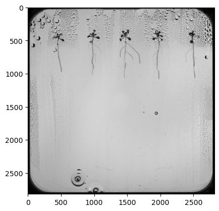
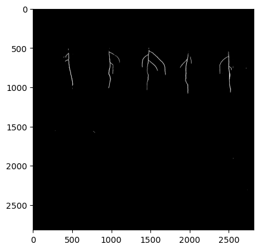
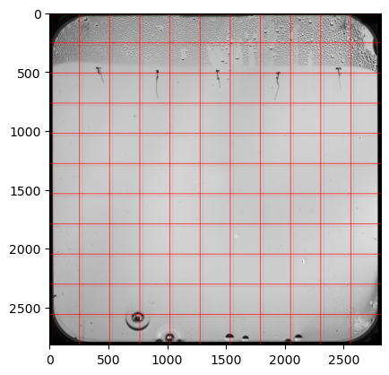
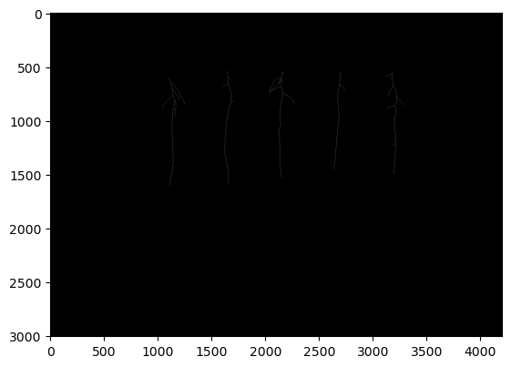
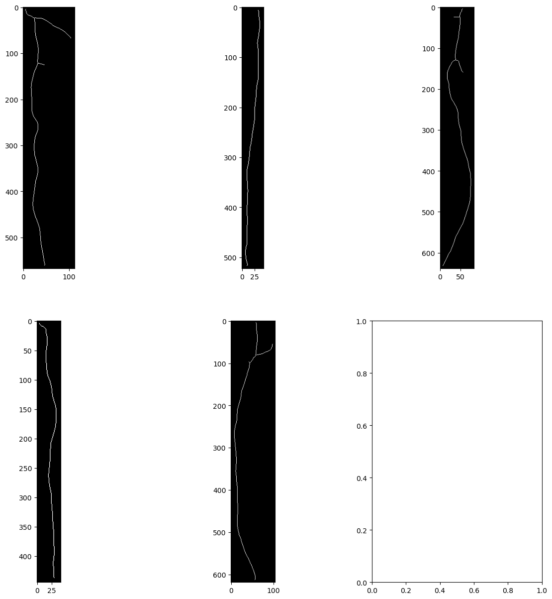
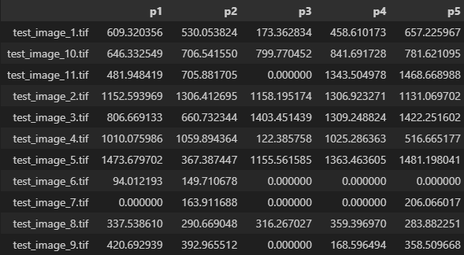

A U-Net segmentation model that isolates plant roots, maps every root tip, and measures root length — so a robot arm can water each plant exactly where it needs it.


Before and after: the raw root image (left) and the U-Net model's segmentation output (right).
NPEC needed a way to water experimental plants precisely at the root, rather than broadly across the whole tray. That meant solving three problems in sequence: find the roots in a camera image, work out exactly where each root ends, and get those coordinates to a robot arm that could act on them.
For segmentation I used U-Net, a convolutional neural network built specifically for this kind of task. Rather than processing a whole image at once, U-Net works on segments of it, which keeps the workload — and the runtime — manageable. The model's raw output needed a bit of cleaning up, but it gave me something reliably usable straight away.

U-Net segmentation output, isolating root pixels from the background before any further processing.
With the roots isolated, I skeletonised the image — reducing every root to a single-pixel-wide line — which made it possible to pull out the coordinates of every root's start and end point.


Skeletonisation (left) turns each root into a line; from there, individual roots (right) can be isolated and measured separately.
From the skeleton, I could isolate the main root specifically and calculate its length — the measurement NPEC's researchers actually needed to track plant growth over time.

The main root isolated from lateral roots, with its length measured directly from the skeleton.
The segmentation and measurement pipeline worked reliably end to end, from raw image to root-tip coordinates and root length. On the robotics side, I got as far as a working simulation of the watering robot moving to the isolated coordinates, but ran out of time to fully automate that final step — a clear, scoped next stage rather than an open question.